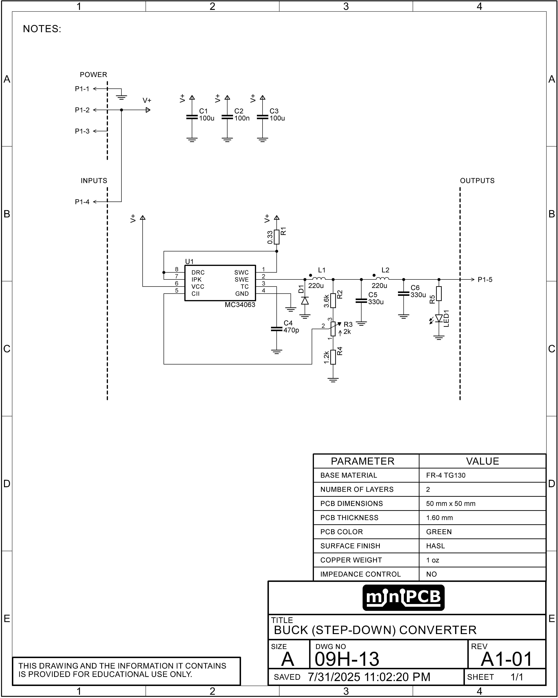
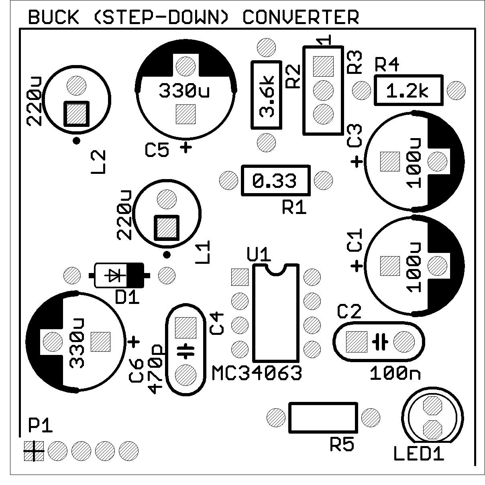

PCB Details
Part No: 09H-13
Title: Buck (Step-Down) Converter (MC34063)
Board Size: Approx. 50 x 50 mm
Pieces per Panel: 4
Panel Size: 100 x 100 mm (V-scored)
Schematic

Board Layout
Circuit Description
This miniPCB implements a buck (step-down) converter built around the MC34063 controller (U1). The board accepts a DC input at P1-2/4 (V+) and delivers a lower regulated output at P1-5.
Power Input & Filtering
- C1, C2, C3 provide bulk energy storage and high-frequency bypassing for the input rail, reducing supply ripple and noise.
- R1 is the current-sense resistor feeding the MC34063’s internal limiter to protect the switching transistor.
Switching Stage
- The internal switch of U1 drives the main inductor L1, which stores energy during the on-time and releases it to the load during off-time.
- D1 is the catch diode, providing a path for inductor current when the switch is off.
- C5 is the primary output capacitor, storing charge directly from the inductor to supply the load during switching cycles.
- C6 is the secondary output filter capacitor, reducing residual ripple and improving output voltage stability.
- C4 sets the MC34063’s oscillator frequency, determining the switching rate.
Regulation & Feedback
- R2, R3 (potentiometer), and R4 form the voltage feedback divider that sets the output voltage; adjustment is made via R3.
- LED1, with series resistor R5, provides a visual indication of output presence.
Connections
- P1-1: Ground (GND) reference for input and output.
- P1-2: Positive DC input (V+).
- P1-3: No connection (NC).
- P1-4: Positive DC input (V+), internally linked to P1-2.
- P1-5: Regulated DC output (Vout).
Typical use: stepping a higher DC supply down to a lower regulated rail for lab experiments or embedded projects. Select inductor value, diode type (Schottky recommended), and output capacitors according to desired load current and ripple performance.
Example Parts List
| Ref Des | Value / Part | Rationale |
|---|---|---|
| C1 | 100 µF electrolytic | Bulk input filtering to smooth supply transients. |
| C2 | 100 nF ceramic | High-frequency bypass to suppress switching noise. |
| C3 | 100 µF electrolytic | Additional bulk input filtering for stability. |
| C4 | 470 pF ceramic | Oscillator timing capacitor setting switching frequency. |
| C5 | 330 µF electrolytic | Output filtering to reduce voltage ripple. |
| C6 | 330 µF electrolytic | Additional output filtering for load stability. |
| D1 | Schottky diode | Freewheeling path for inductor current during switch-off. |
| LED1 | Red LED | Visual indicator of output voltage presence. |
| L1 | 220 µH | Energy storage inductor for buck conversion. |
| L2 | 220 µH | Ripple reduction inductor for output filtering. |
| R1 | 0.33 Ω | Current sense resistor for switch protection. |
| R2 | 2 kΩ | Feedback divider upper resistor for voltage regulation. |
| R3 | 2 kΩ (3296W pot) | Type 3296W multiturn potentiometer for adjustable output voltage. |
| R4 | 1 kΩ | Feedback divider lower resistor for voltage regulation. |
| R5 | 1 kΩ | Current-limiting resistor for LED indicator. |
| U1 | MC34063 | Switch-mode regulator IC controlling the buck topology. |